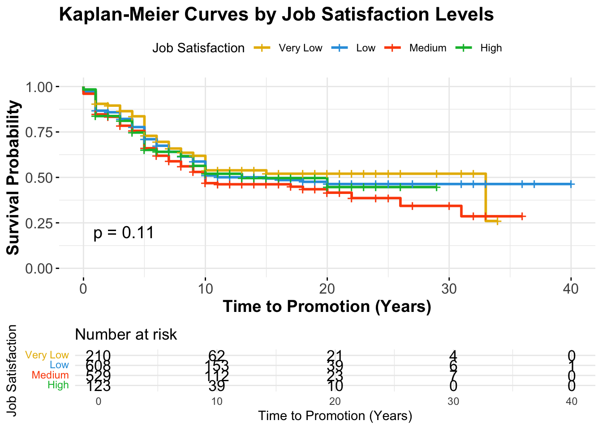
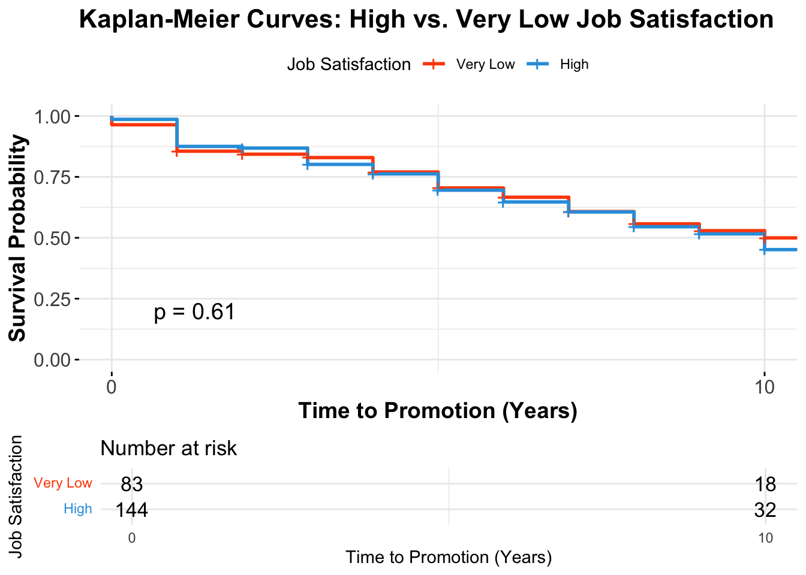

# Filter data to identify high performers (Performance bin 4)high_perf <- df %>%filter(Performance =='4')# Summary of high performerssummary(high_perf)
Age Attrition BusinessTravel DailyRate
Min. :19.00 No :98 Non-Travel :16 Min. : 121.0
1st Qu.:30.00 Yes:25 Travel_Frequently:24 1st Qu.: 470.5
Median :36.00 Travel_Rarely :83 Median : 791.0
Mean :36.95 Mean : 799.2
3rd Qu.:43.50 3rd Qu.:1169.0
Max. :58.00 Max. :1490.0
Department DistanceFromHome Education
Human Resources : 3 Min. : 1.00 Min. :1.000
Research & Development:87 1st Qu.: 2.00 1st Qu.:2.000
Sales :33 Median : 8.00 Median :3.000
Mean :10.15 Mean :2.862
3rd Qu.:16.00 3rd Qu.:4.000
Max. :29.00 Max. :5.000
EducationField EmployeeCount EmployeeNumber EnvironmentSatisfaction
Human Resources : 1 Min. :1 Min. : 2.0 Min. :1.000
Life Sciences :54 1st Qu.:1 1st Qu.: 360.0 1st Qu.:2.000
Marketing : 9 Median :1 Median : 903.0 Median :3.000
Medical :42 Mean :1 Mean : 948.5 Mean :2.634
Other : 9 3rd Qu.:1 3rd Qu.:1512.5 3rd Qu.:4.000
Technical Degree: 8 Max. :1 Max. :2036.0 Max. :4.000
Gender HourlyRate JobInvolvement JobLevel
Female:48 Min. :30.00 Min. :1.000 Min. :1.000
Male :75 1st Qu.:48.00 1st Qu.:2.000 1st Qu.:1.000
Median :66.00 Median :3.000 Median :2.000
Mean :65.14 Mean :2.732 Mean :2.065
3rd Qu.:82.50 3rd Qu.:3.000 3rd Qu.:3.000
Max. :99.00 Max. :4.000 Max. :5.000
JobRole JobSatisfaction MaritalStatus MonthlyIncome
Research Scientist :30 Min. :1.000 Divorced:26 Min. : 1052
Laboratory Technician :22 1st Qu.:2.000 Married :55 1st Qu.: 2814
Sales Executive :22 Median :3.000 Single :42 Median : 4775
Manager :14 Mean :2.797 Mean : 6706
Manufacturing Director :11 3rd Qu.:4.000 3rd Qu.: 8934
Healthcare Representative:10 Max. :4.000 Max. :19973
(Other) :14
MonthlyRate NumCompaniesWorked Over18 OverTime PercentSalaryHike
Min. : 2137 Min. :0.000 Y:123 No :85 Min. :22.00
1st Qu.: 7780 1st Qu.:1.000 Yes:38 1st Qu.:22.00
Median :13084 Median :1.000 Median :23.00
Mean :13819 Mean :2.561 Mean :23.01
3rd Qu.:19792 3rd Qu.:4.000 3rd Qu.:24.00
Max. :26968 Max. :9.000 Max. :25.00
PerformanceRating RelationshipSatisfaction StandardHours StockOptionLevel
Min. :4 Min. :1.000 Min. :80 Min. :0.0000
1st Qu.:4 1st Qu.:2.000 1st Qu.:80 1st Qu.:0.0000
Median :4 Median :3.000 Median :80 Median :1.0000
Mean :4 Mean :2.667 Mean :80 Mean :0.7886
3rd Qu.:4 3rd Qu.:4.000 3rd Qu.:80 3rd Qu.:1.0000
Max. :4 Max. :4.000 Max. :80 Max. :3.0000
TotalWorkingYears TrainingTimesLastYear WorkLifeBalance YearsAtCompany
Min. : 1.00 Min. :0.000 Min. :1.000 Min. : 0.000
1st Qu.: 6.00 1st Qu.:2.000 1st Qu.:2.000 1st Qu.: 3.000
Median :10.00 Median :3.000 Median :3.000 Median : 6.000
Mean :12.11 Mean :2.805 Mean :2.764 Mean : 7.659
3rd Qu.:16.00 3rd Qu.:3.000 3rd Qu.:3.000 3rd Qu.:10.000
Max. :37.00 Max. :6.000 Max. :4.000 Max. :29.000
YearsInCurrentRole YearsSinceLastPromotion YearsWithCurrManager
Min. : 0.000 Min. : 0.00 Min. : 0.00
1st Qu.: 2.000 1st Qu.: 0.00 1st Qu.: 1.50
Median : 3.000 Median : 1.00 Median : 4.00
Mean : 4.797 Mean : 2.74 Mean : 4.52
3rd Qu.: 7.000 3rd Qu.: 4.00 3rd Qu.: 7.00
Max. :16.000 Max. :15.00 Max. :17.00
PromotionEvent Performance
Min. :0.0000 1: 0
1st Qu.:0.0000 2: 0
Median :0.0000 3: 0
Mean :0.4228 4:123
3rd Qu.:1.0000
Max. :1.0000
# Fit the Kaplan-Meier modelkm_fit <-survfit(Surv(YearsAtCompany, PromotionEvent) ~ Performance, data = df)# Plot the Kaplan-Meier survival curvesggsurvplot(km_fit, data = df, pval =TRUE, risk.table =TRUE, risk.table.height =0.25, risk.table.y.text.col =TRUE,title ="Kaplan-Meier Curves by Job Satisfaction Levels",xlab ="Time to Promotion (Years)", ylab ="Survival Probability",ggtheme =theme_minimal(),font.main =c(16, "bold"), font.x =c(14, "bold"), font.y =c(14, "bold"), font.tickslab =c(12, "plain"), legend.labs =c("Very Low", "Low", "Medium", "High"), # Customize legend labelslegend.title ="Job Satisfaction", # Customize legend titlepalette =c("#E7B800", "#2E9FDF", "#FC4E07", "#00BA38"), # Provide four colors# xlim = c(0,11),width =10, height =6)
Warning in (function (mapping = NULL, data = NULL, stat = "identity", position
= "identity", : Ignoring unknown parameters: `width`

# Filter the data to include only "High" (4) and "Very Low" (1) job satisfaction levelsfiltered_df <-subset(df, JobInvolvement %in%c(1, 4))# Fit the Kaplan-Meier model with filtered datakm_fit <-survfit(Surv(YearsAtCompany, PromotionEvent) ~ JobInvolvement, data = filtered_df)# Plot the Kaplan-Meier survival curvesggsurvplot(km_fit, data = filtered_df, pval =TRUE, risk.table =TRUE, risk.table.height =0.25, risk.table.y.text.col =TRUE,title ="Kaplan-Meier Curves: High vs. Very Low Job Satisfaction",xlab ="Time to Promotion (Years)", ylab ="Survival Probability",ggtheme =theme_minimal(),font.main =c(16, "bold"), font.x =c(14, "bold"), font.y =c(14, "bold"), font.tickslab =c(12, "plain"), legend.labs =c("Very Low", "High"), # Customize legend labelslegend.title ="Job Satisfaction", # Customize legend titlepalette =c("#FC4E07", "#2E9FDF"), # Provide two colorsxlim =c(0,10),width =10, height =6)
Warning in (function (mapping = NULL, data = NULL, stat = "identity", position
= "identity", : Ignoring unknown parameters: `width`

# # Fit a regression model to understand factors affecting Performance# # Convert Performance to a numeric variable for regression analysis# df$Performance <- as.numeric(as.character(df$Performance))# # # Fit a linear regression model# performance_model <- lm(Performance ~ PerformanceRating + JobLevel + YearsAtCompany + JobSatisfaction, data = df)# # # Summarize the regression model# summary(performance_model)
# Load necessary packagespacman::p_load(survival, survminer, readxl, dplyr)# Load the datasetdf <-read.csv("WA_Fn-UseC_-HR-Employee-Attrition.csv")# Convert relevant columns to appropriate data typesdf <- df %>%mutate_if(is.character, as.factor) %>%mutate(YearsAtCompany =as.numeric(as.character(YearsAtCompany)),PromotionEvent =ifelse(YearsSinceLastPromotion ==0, 1, 0),PromotionEvent =as.numeric(PromotionEvent))# Categorize PercentSalaryHike into performance binsdf <- df %>%mutate(Performance =case_when( PercentSalaryHike >=11& PercentSalaryHike <=11~'1', PercentSalaryHike >=12& PercentSalaryHike <=14~'2', PercentSalaryHike >=15& PercentSalaryHike <=21~'3', PercentSalaryHike >=22& PercentSalaryHike <=25~'4',TRUE~'Unknown'# Handle cases outside the defined ranges ))# Convert the new Performance column to a factordf$Performance <-as.factor(df$Performance)# Prepare the survival objectsurv_object <-Surv(time = df$YearsAtCompany, event = df$PromotionEvent)# Fit the Cox Proportional Hazards modelcox_model <-coxph(surv_object ~ Performance + PercentSalaryHike + YearsAtCompany + TotalWorkingYears + JobLevel + JobSatisfaction, data = df)
Warning in coxph.fit(X, Y, istrat, offset, init, control, weights = weights, :
Ran out of iterations and did not converge
# Load necessary packagespacman::p_load(dplyr, readxl)# Read the datadf <-read.csv("WA_Fn-UseC_-HR-Employee-Attrition.csv")# Create the Performance variabledf$Performance <-cut(df$PercentSalaryHike,breaks =c(-Inf, 11, 14, 21, 25, Inf),labels =c('1', '2', '3', '4', 'Unknown'),right =TRUE)# If you want to include other variables in the analysis, for example, JobRole:jobrole_promotion_table_high_perf <-table(high_perf$JobRole, high_perf$PromotionEvent)# Print the tableprint(jobrole_promotion_table_high_perf)
0 1
Healthcare Representative 7 3
Human Resources 1 2
Laboratory Technician 6 16
Manager 10 4
Manufacturing Director 6 5
Research Director 5 0
Research Scientist 15 15
Sales Executive 18 4
Sales Representative 3 3
# Cross-tabulate JobRole and Performancejobrole_table <-table(df$JobRole, df$Performance)print(jobrole_table)